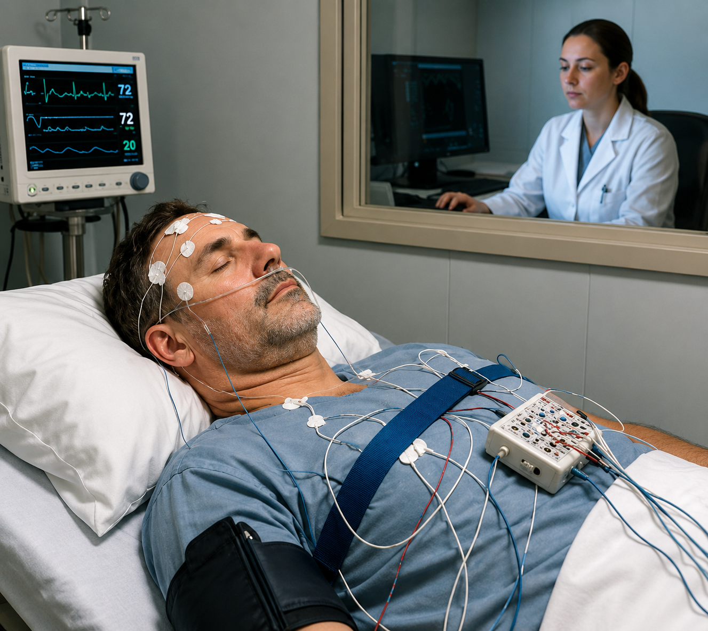
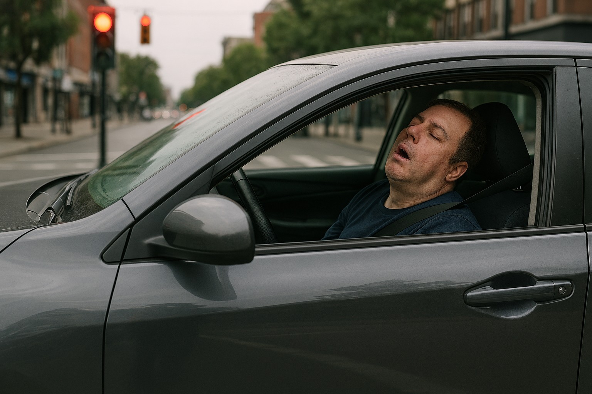
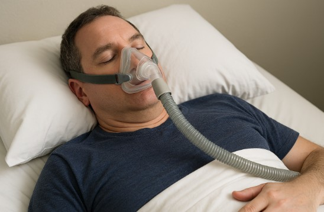

在舊觀念中，老一輩的人覺得睡眠時「鼾聲如雷」是睡得香的象徵。對健康的警覺性很低，從未想過這樣的打呼可能是身體發出的警訊。
初期：打呼只是小事？
打呼在多數人眼中是常見現象，但其實它可能是「睡眠呼吸中止症」的前兆。這是一種在睡眠中呼吸反覆停止的疾病，最常見的是阻塞型睡眠呼吸中止症（OSA），原因多半是上呼吸道在睡眠時塌陷或阻塞，導致空氣無法順利進入肺部 。
初期症狀不明顯，除了打呼，可能伴隨白天疲倦、注意力不集中、情緒不穩、高血壓等症狀，但往往被忽略。在這樣的狀況下度過了年輕的歲月，直到身體開始出現更明顯的警訊。
中期：重度睡眠呼吸中止症的診斷
隨著年齡增長，開始身體常常感到異常疲倦，白天容易打瞌睡，工作時無法集中注意力，甚至出現高血壓和耳鳴等問題。在家人的建議下，前往醫院睡眠中心接受「多項睡眠生理檢查（PSG）」，檢查結果顯示「睡眠呼吸中止指數（AHI）」高達每小時超過 30 次，屬於重度睡眠呼吸中止症。
 |
| (圖片來源：出處來自於 AI 合成睡眠中心檢查示意圖) |
醫師依照病況建議使用「陽壓呼吸器（CPAP）」，這是一種在睡眠時透過鼻罩或面罩持續輸送空氣，幫助呼吸道保持暢通的設備。然而，初次試戴呼吸器的感受並不好，異物感強烈、鼻塞、睡眠品質反而下降，會讓人產生強烈排斥感。
排斥治療的代價
因為心理因素拒絕使用呼吸器，身體狀況慢慢惡化。高血壓控制不佳，體重逐漸上升，白天嗜睡頭暈更加嚴重，甚至影響到工作表現與人際關係。研究指出，睡眠呼吸中止症與高血壓、心血管疾病、肥胖、糖尿病等慢性病密切相關 。
然而，這不只是打呼的問題，而是整體健康的危機。尤其是開車或工作容易精神狀況不佳，而容易影響工作效率或是交通危險發生，那一刻才會讓自己感受到這個疾病的危險性。
 |
| (圖片來源：出處來自於 AI 合成開車疲勞駕駛示意圖) |
後期：接受治療，重拾健康
在心裡做了調適後，重新嘗試配戴選擇合適自己的陽壓呼吸器。也同時選擇更合適自己的面罩尺寸和合適的機型，並依照醫院衛教指導調整呼吸來適應呼吸器的使用。同時，也開始進行飲食控制與規律運動，3 年下來成功減重近 25 公斤。
得到的成果是這些努力不僅改善了睡眠品質，也讓高血壓恢復正常，體重回到理想範圍，也不用在服用高血壓藥，白天精神明顯提升，注意力也更集中。醫師表示，減重 10% 可降低約 20% 的呼吸中止次數。
 |
| (圖片來源：出處來自於 AI 合成配戴陽壓呼吸器示意圖) |
結論：從忽略到重視，是一場自我覺醒
回顧這段艱辛歷程，深刻體會到健康不能等。尤其人的年紀到了中年後，睡眠呼吸中止症不只是打呼那麼簡單，它帶來的是高血壓、肥胖、注意力不集中以及衍生更多慢性疾病等問題。唯有自己正視它，才能真正改善生活品質。
現代因醫療科技發達，相對去大醫院檢查睡眠呼吸中止症的人相對非常多，以親身經歷，去教學醫院門診預約睡眠中心，通常要 3~5 個月才有辦法安排到檢查，公司開設的診所也有檢查設備可以快速檢測睡眠呼吸中止的診斷，可以幫助有需要的員工早期發現早期治療有多一項快速診斷的選擇，如果你或妳身邊的人有打呼、嗜睡、注意力不集中等症狀，請不要輕忽。早期診斷、積極治療，加上生活習慣和飲食的改變，是對自己和給家人最好的幸福。